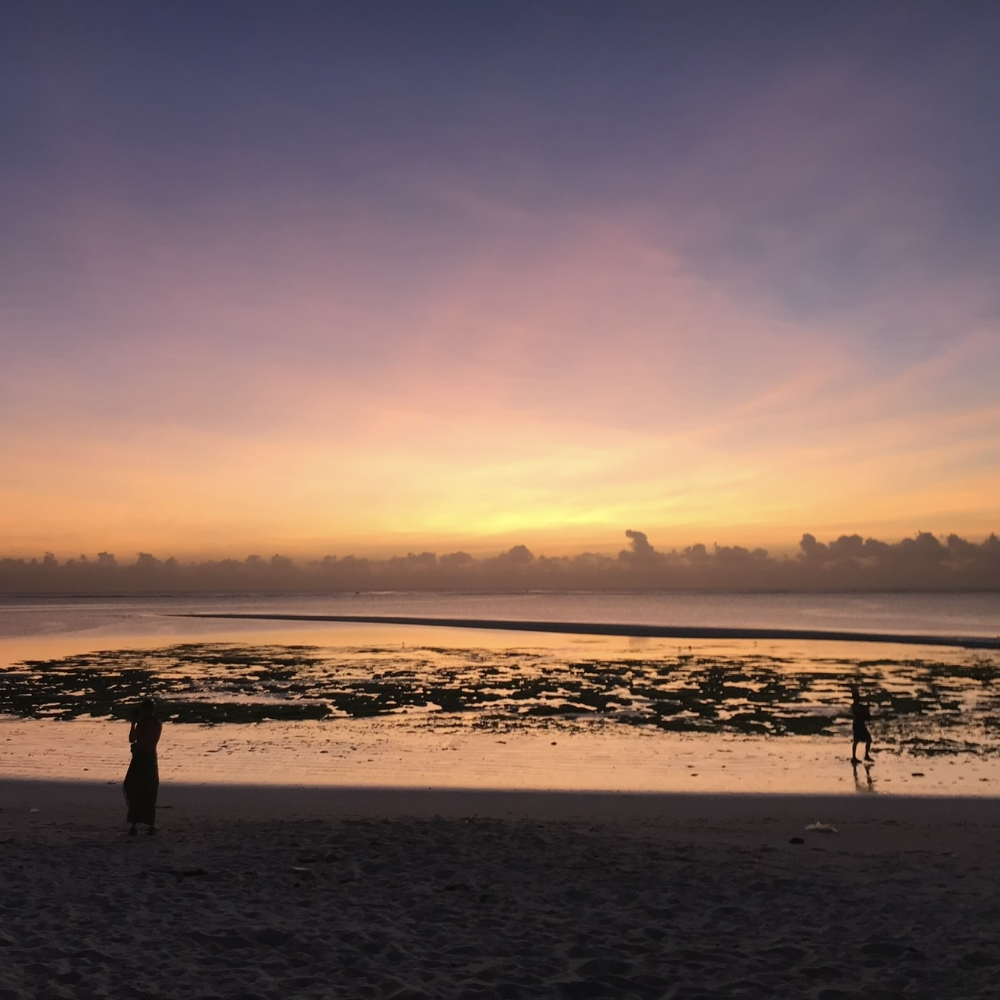
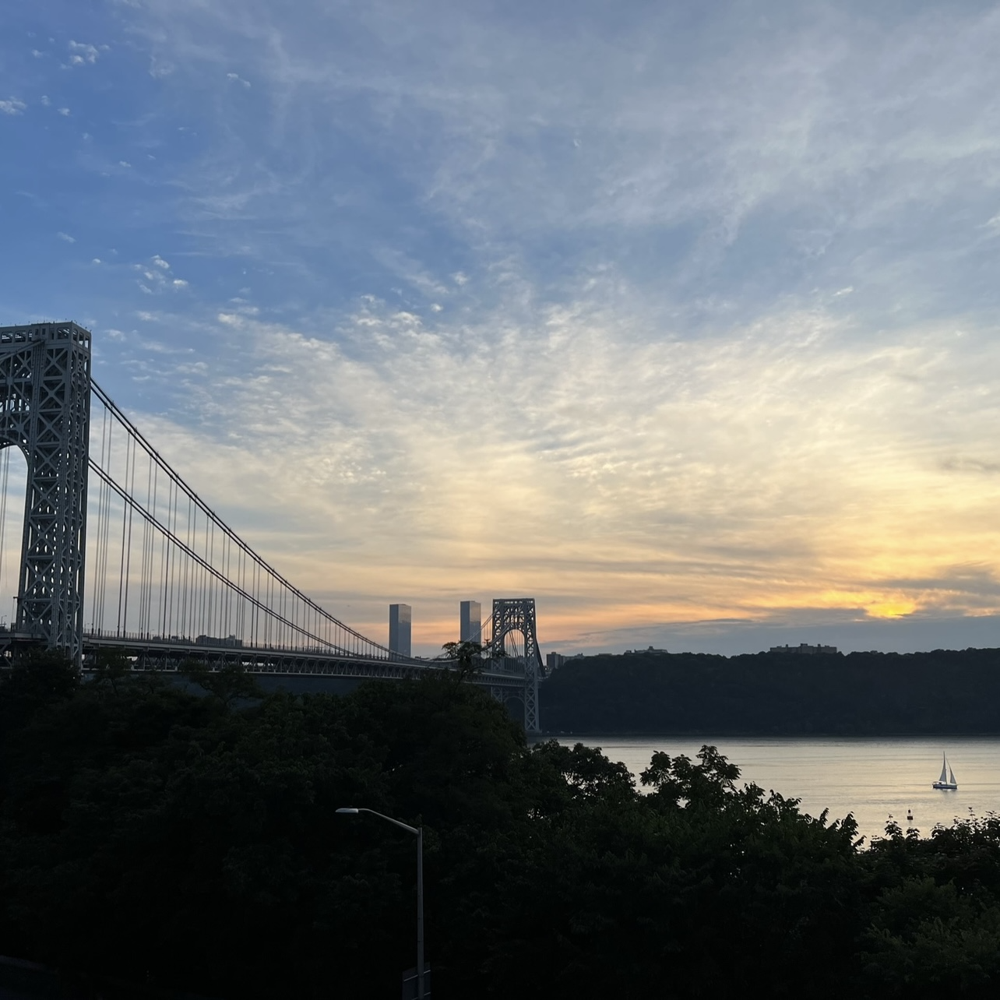
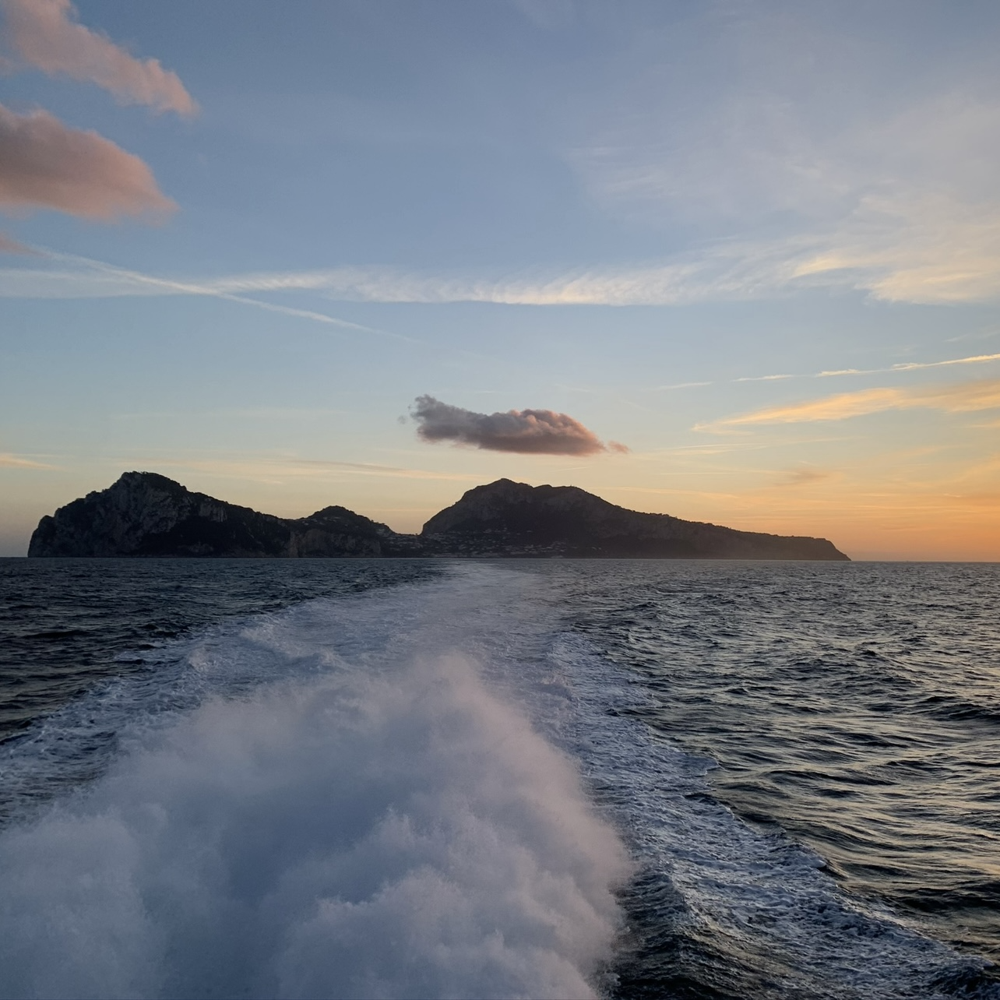
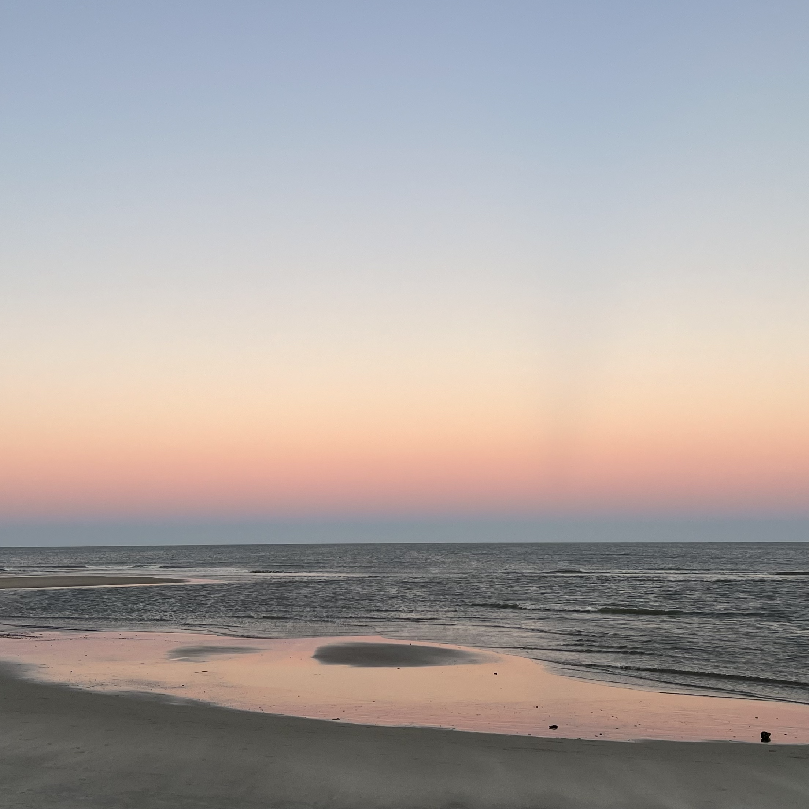

Rank
Image
Description
1

Zanzibar, Tanzania (2018).
This sunrise is ranked first for both its beauty and its sentimental value. I had wanted to go to Tanzania to visit Zanzibar and Kilimanjaro since I was little, and I am thankful I had the opportunity to see both!
2

Emerald Isle, North Carolina (2025).
This is a sunrise on the beach where I grew up featuring this awesome metal detector.
3

New York, New York (2022).
I took this picture of the sunset over the George Washington Bridge the week I moved to New York. I like the clouds. My favorite part is the sailboat.
4

Capri, Italy (2020).
I took this picture on the ferry between Sorrento and Capri in March 2020...Yes I was in Italy in March 2020, and yes I did get Covid. A fun fact about me is that after I was evacuated from my study abroad program, I had the 81st Covid case diagnosed in North Carolina. Fortunately I was able to effectively quarantine and was mostly fine. This is one of my favorite sunset pictures in part because it reminds me of one of the last moments pre-pandemic.
5

Somewhere Over the Mid-Atlantic (2021).
This is another sunrise from a trip I took to New York before moving here.
6

Emerald Isle, North Carolina (2025).

8

Grand Canyon, Arizona (2022).
9

Bald Head Island, North Carolina (2024).
10

San Juan, Puerto Rico (2024).
11

Swansboro, North Carolina (2025).
12

Chapel Hill, North Carolina (2019).
13

Swansboro, North Carolina (2024).
14

Bald Head Island, North Carolina (2024).
15

Chapel Hill, North Carolina (2020).
Click the image to learn more about Wilson Library, pictured.
16

Rio de Janeiro, Brazil (2025).